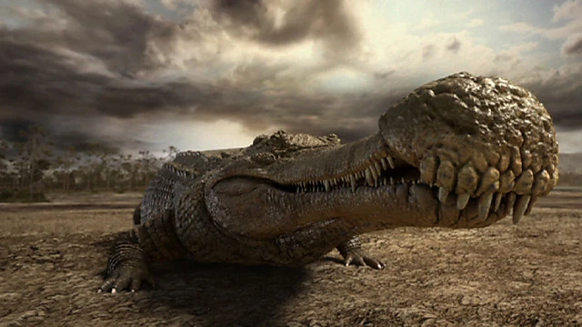
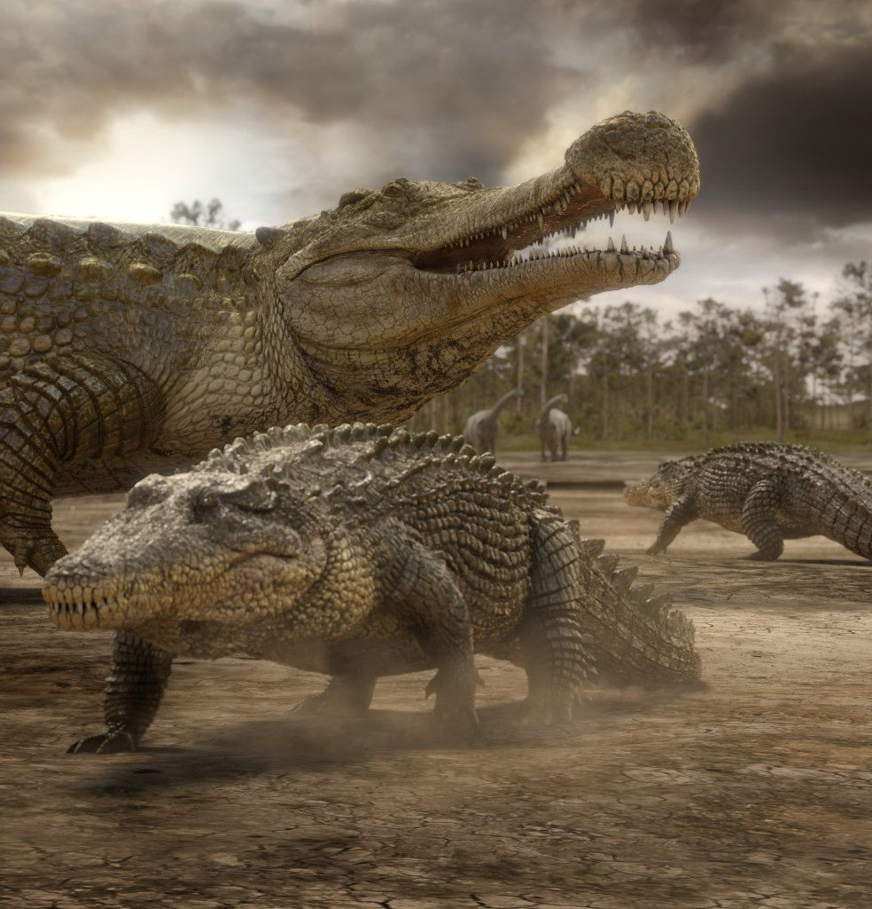
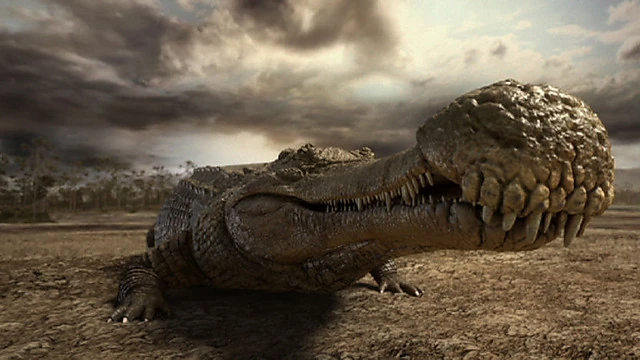
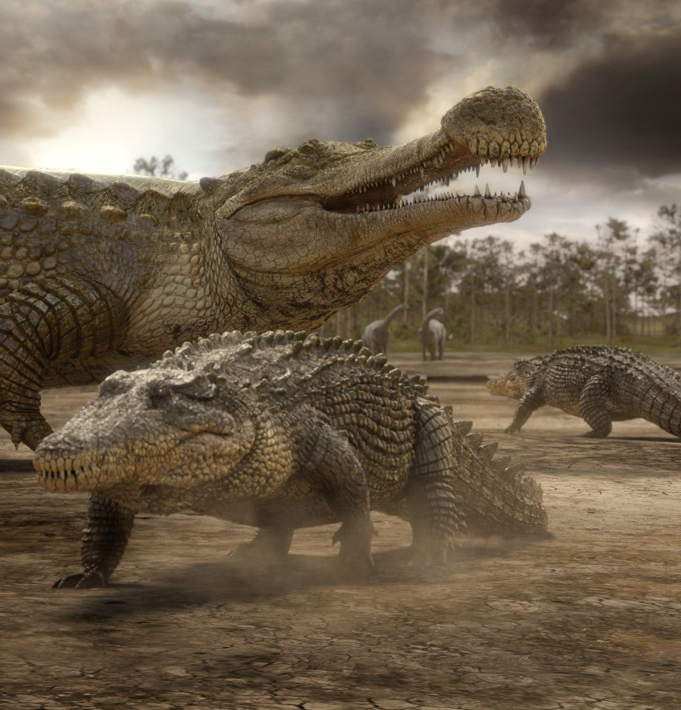

Română
Sarcosuchus, numit de France de Broin și Philippe Taquet în 1966, este un crocodiliform preistoric gigant din stadiile Aptian până la Albian ale perioadei Cretacice. Fosilele sale au fost găsite în principal în Niger, Africa, cu posibile descoperiri în Brazilia. Clasificată în Chordata, Reptilia, Diapsida, Archosauromorpha și Mesoeucrocodylia, în cadrul familiei Pholidosauridae, singura specie recunoscută este sarcosuchus imperator. Sarcosuchus era un carnivor, estimat la 11-12 metri lungime. Cele mai multe exemplare sunt cunoscute din dinți și cranii, cu părți ale scheletului postcranian descoperite la sfârșitul secolului al XX-lea. Sarcosuchus este remarcabil pentru dimensiunea sa enormă și botul distinctiv, alungit, care avea un număr mare de dinți ascuțiți, indicând rolul său de prădător de top în ecosistemul său.
English
Sarcosuchus, named by France de Broin and Philippe Taquet in 1966, is a giant prehistoric crocodyliform from the Aptian to Albian stages of the Cretaceous period. Its fossils have been primarily found in Niger, Africa, with possible finds in Brazil. Classified under Chordata, Reptilia, Diapsida, Archosauromorpha, and Mesoeucrocodylia, within the family Pholidosauridae, the only recognized species is sarcosuchus imperator. Sarcosuchus was a carnivore, estimated to be 11-12 meters long. Most specimens are known from teeth and skulls, with parts of the postcranial skeleton discovered in the late 20th century. Sarcosuchus is notable for its enormous size and distinctive, elongated snout, which bore a large number of sharp teeth, indicating its role as a top predator in its ecosystem.